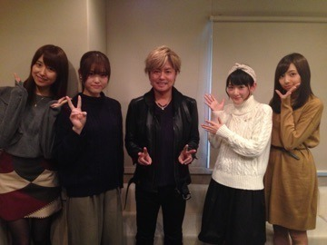

| 2015/12 12 Sat | 最近、割とプライベ ート充実している。 |
生駒ちゃんですヽ(・∀・)ノ
師走というものは今まで結構バタバタとしていたのですが、
時間の使い方が分かって来たのか、
引きこもらずに一歩外に踏み出す勇気が付いてきたのか。
プライベート
2次元充実しております

まっちゅんと映画 ハイ☆スピード！
観に行きました
まっちゅんブログに2人のツーショット上がってるので、
私は彼らとのショットを照
生駒ちゃん、
ハイ☆スピード！観に行くんだって思ったら自然とおめかししていたよ
白ニットだよ⭐︎
いつもよりも、リップピンク色にしたよ⭐︎
中学生まこちゃんはもう半端なかったです。
尚先輩に会いたくなりました。
どこに行けば会えますか？
郁弥くんのグッズをお持ち帰りしました。
年末までのパワーを充電しましたヽ(・∀・)ノ
そしてお知らせですヽ(・∀・)ノ
bayfmスペシャルプログラム
「KEIYOGINKO GRAND COUNTDOWN JAPAN HOT HOT 100」
放送日時：2015年12月31日(木)13:00~18:50
出演は15:00〜15:45予定
DJ：森久保祥太郎
ゲスト：乃木坂46（生駒里奈・衛藤美彩・新内眞衣・松村沙友理）
わああああわああああわああああ⊂('ω'⊂ )))Σ≡=─༄༅༄༅༄༅༄༅༄༅
⊂('ω'⊂ )))Σ≡=─༄༅༄༅༄༅༄༅༄༅
森久保祥太郎さんのラジオのゲストに行って来ました。
前日からまっちゅんとやばいよやばいよ〜⊂('ω'⊂ )))Σ≡=─༄༅༄༅༄༅༄༅༄༅
ってメールして、
いざ収録始まって、
ラジオ収録では、ヘッドホンをして自分の声や相手の声を聞きながら話すのですが、、
なんか、いつも聴いてるCDを聴いているような感覚になり、
うふふ
これまた年末までのパワーを充電しましたヽ(・∀・)ノ
多分、ちょいちょいオタク生駒ちゃんが出現していると思いますが、
ラジオ聴いてからの紅白歌合戦という2015年最後の１日をお楽しみくださいませ


奇跡。。
夢だったのかなぁ。。
さぁ、クリスマスライブまでもう少し！
その前にアンダラヽ(・∀・)ノ
観に行くぜヽ(・∀・)ノ
生駒ちゃん、今年はインフルエンザかからないぜ！
皆さんも体気をつけるんだぞ〜ヽ(・∀・)ノ
へばなっ☆彡
コメント(549)
2015/12/12 23:42